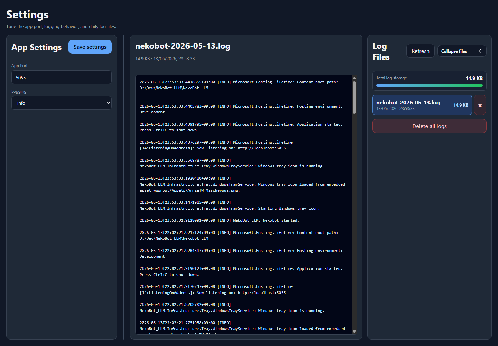
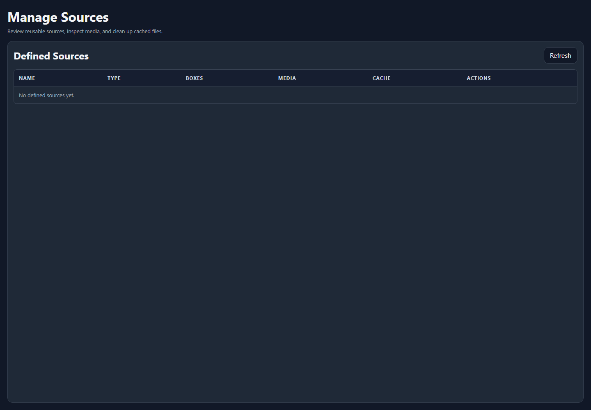

Help
Troubleshooting
Start with the local Settings page and logs when something is not behaving as expected.
Common Checks

- Confirm NekoBot is running in the tray.
- Confirm the setup page opens from the tray menu.
- Check that Streamer.bot is connected before testing triggers.
- Use the Open Overlay page to confirm the overlay viewer loads.
- Open Settings to inspect logs for errors.
Settings And Logs
The Settings page is the first place to look when the setup UI opens but something does not behave. It gives you the app-level view: saved settings, visible diagnostics, and log output.
AreaUse it for
SettingsConfirm that saved app settings match the setup you expect before testing overlays or triggers again.LogsLook for startup errors, Streamer.bot connection failures, missing source files, TTS model errors, or overlay save problems.Connection errorsUsually point back to Streamer.bot Setup, the WebSocket URL, password, or event subscriptions.Overlay errorsUsually point back to Overlay Setup, source configuration, trigger binding, or the OBS browser source URL.Sources
If a source is missing, open Manage Sources and confirm that it exists, is cached when needed, and is still referenced by the expected boxes.

CheckWhy it matters
Source existsIf a reusable source was deleted or renamed, boxes that reference it may not render the expected content.Cached mediaDownloaded or uploaded media must still be available to the app when an overlay tries to play it.Box referencesA source can exist but still not appear if the active overlay box points to a different source.Preview behaviorIf the source previews correctly but does not appear in OBS, refresh the OBS browser source and confirm the copied overlay URL is the current one.